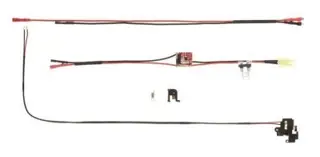

Wire com GEN3 MOSFET Set para GR16 fiação traseira TYPE 18 Awg Teflon (G&G), Ref. 16278. Disponível para orçamento. Peças e acessórios para airsoft, orçamento pelo WhatsApp.

Ver preço e fazer orçamento na loja JOTA GEAR